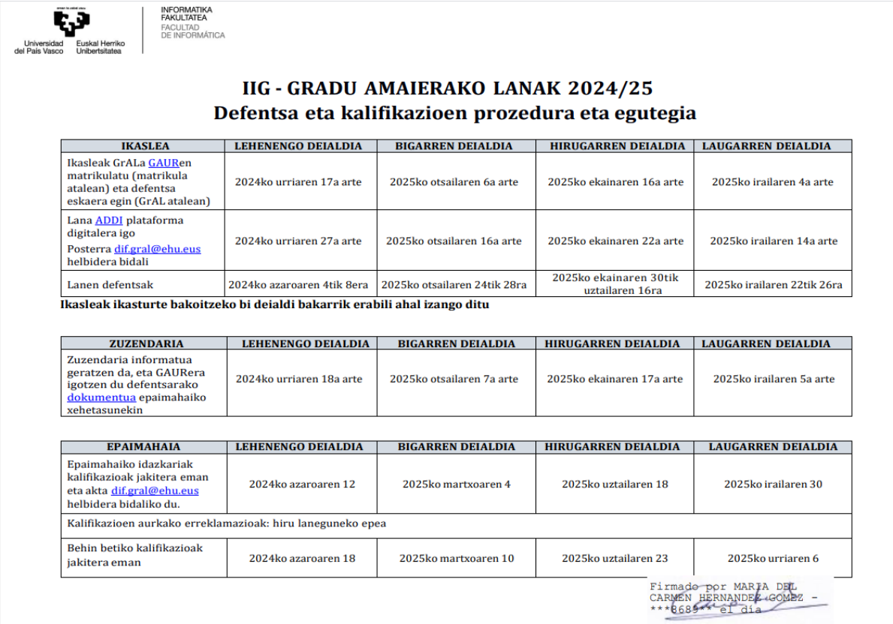
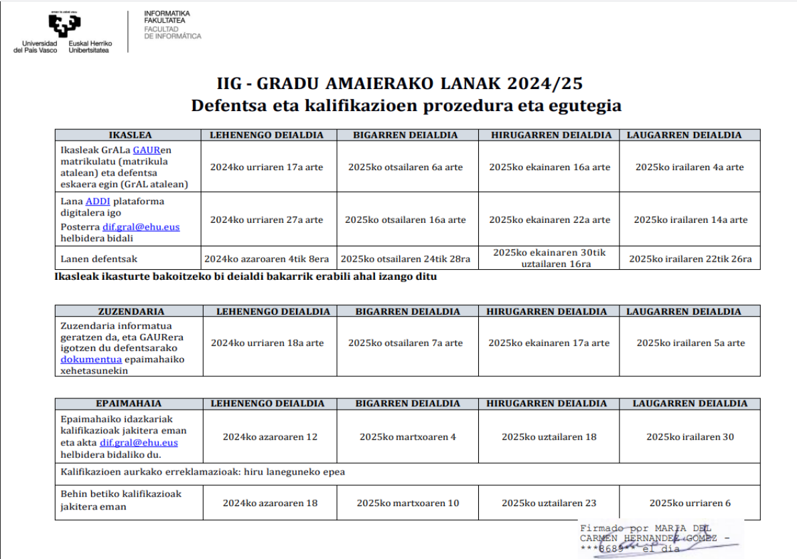

Nahiz eta 2025-26 urteko deialdiaren egutegi ofiziala argitaratuta ez egon, emen txertatzen dugu lehen urteko egutegia gida bezala, deialdiak gehitzea edo aldatzea ez denez aurreikusten, 2025-26 urteko egutegia antzekoa izango dela suposa dezakegu.

